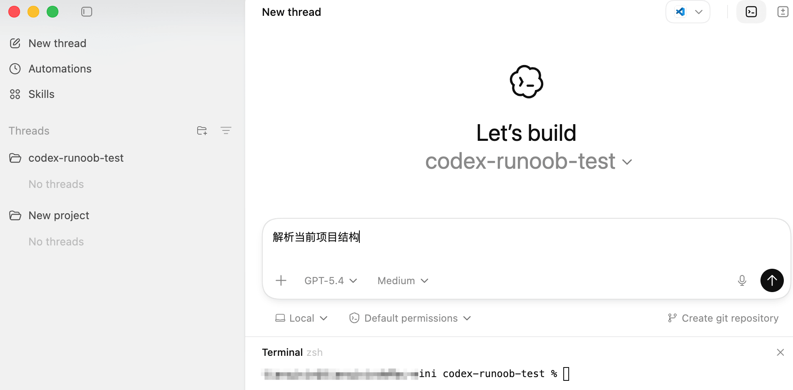
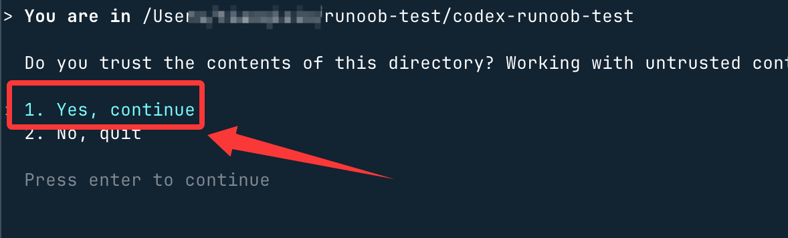
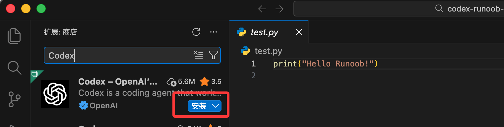

Instalación y uso de Codex
Codex se puede usar de varias formas. Según los hábitos del desarrollador, se puede dividir aproximadamente en cinco formas:
| Método de instalación | Escenario de uso | Nivel de recomendación |
|---|---|---|
| Aplicación Codex | Descargar directamente la aplicación Codex | ⭐⭐⭐⭐ |
| Codex CLI | Uso en la terminal | ⭐⭐⭐⭐⭐ |
| Complemento IDE | Uso en VS Code / Cursor | ⭐⭐⭐⭐ |
| Instalación con Homebrew | Usuarios de Mac | ⭐⭐⭐⭐ |
| Binario de GitHub Release | Instalación manual | ⭐⭐⭐ |

A continuación se presentan por separado.
1. Aplicación Codex
La forma más sencilla esusar directamente la aplicación Codex, se necesita una buena conexión de red.
Visitar:https://chatgpt.com/zh-Hans-CN/download/
Descargar la aplicación:

Inicia sesión con tu cuenta de ChatGPT y podrás usarlo.
Descripción de la interfaz de ChatGPT:
Modo Codex:

Luego puedes escribir tus necesidades en el campo de entrada:

Si hay obstáculos para acceder y usar Codex, los productos nacionales como Alibaba Qoder Quest y ByteDance Trae Solo son similares.
2、Codex CLI
La forma más utilizada por los desarrolladores esCodex CLI。
CLI es un agente de programación de IA que se ejecuta en la terminal y puede:
- Leer código
- Modificar código
- Ejecutar comandos de shell
- Corregir errores automáticamente
Codex CLI se ejecuta localmente, por lo que el código no se sube a la nube; solo el prompt y el contexto necesario se envían al modelo.
Instalar Codex CLI
Instalación y actualización con un clic en macOS/Linux:
curl -fsSL https://chatgpt.com/codex/install.sh | sh
Instalación y actualización con un clic en Windows:
powershell -ExecutionPolicy ByPass -c "irm https://chatgpt.com/codex/install.ps1 | iex"Instalación y actualización con npm:
npm install -g @openai/codex # 使用国内镜像安装更快 npm install -g @openai/codex --registry=https://registry.npmmirror.com
Después de la instalación, ejecuta:
codex
para iniciar Codex.
Iniciar sesión en Codex
La primera ejecución requiere iniciar sesión.
Hay dos formas:
Método 1: Iniciar sesión con ChatGPT (recomendado)
codex
Selecciona:
Sign in with ChatGPT
Luego el navegador abrirá la página de inicio de sesión. Una vez iniciada la sesión, podrás usarlo.
Método 2: Iniciar sesión con API Key
Si es el modo de desarrollador, puedes usar API Key:
# macOS / Linux - 临时设置（仅当前终端会话有效） export OPENAI_API_KEY="sk-你的API密钥" # 永久配置（添加到 ~/.bashrc 或 ~/.zshrc） echo 'export OPENAI_API_KEY="sk-你的API密钥"' >> ~/.zshrc source ~/.zshrc # Windows PowerShell $env:OPENAI_API_KEY="sk-你的API密钥" # 配置后启动（指定模型） codex --model gpt-5-codex
Luego ejecuta:
codex
Método 3: Configuración del archivo auth.json
Edita manualmente el archivo de autenticación. Crea el directorio:
mkdir -p ~/.codex
Escribe la API key:
cat > ~/.codex/auth.json << 'EOF'
{
"OPENAI_API_KEY": "sk-你的API密钥"
}
EOF
Primera ejecución de Codex
Entra en el directorio del proyecto:
cd my-project
Inicia Codex:
codex
Luego escribe:
Analiza la estructura actual del proyecto.
Codex automáticamente:
- Escaneará el repositorio de código
- Analizará la estructura del proyecto
- Generará la descripción de la arquitectura del sistema
Por ejemplo, creamos un directorio:
mkdir codex-ejemplo-test
Entra en el directorio:
cd codex-ejemplo-test
Crea un archivo test.py con el siguiente código:
print("Hello Ejemplo!")
Inicia Codex:
codex
Selecciona la primera opciónYes, continuePulsa Enter y así podrás empezar a usar Codex CLI para escribir código:

Los tres modos de ejecución de Codex
Codex CLI ofrece tres modos de seguridad.
| Modo | Función |
|---|---|
| Suggest | Solo sugerir cambios |
| Auto Edit | Modificar archivos automáticamente |
| Full Auto | Ejecutar todas las operaciones automáticamente |
Modo predeterminado:
Suggest
Cambiar de modo:
codex --auto-edit
O:
codex --full-auto
El modo Full Auto puede ejecutar automáticamente la corrección de código y las tareas.
Actualización y desinstalación
# 更新到最新版本 npm update -g @openai/codex # 或强制重装最新版 npm install -g @openai/codex@latest # 卸载 npm uninstall -g @openai/codex # Homebrew 卸载 brew uninstall --cask codex
3. Instalación con Homebrew (recomendado para Mac)
Los usuarios de Mac pueden instalar con Homebrew.
brew install --cask codex
Después de la instalación, ejecuta:
codex
para iniciarlo.
Este método es adecuado para:
- Desarrolladores de Mac
- Usuarios que no quieren instalar Node.js.
Instalación desde GitHub Release (binario)
Si no quieres usar npm, también puedes descargar directamente la versión binaria.
Dirección de descarga:https://github.com/openai/codex/releases
Versiones comunes:
Mac Apple Silicon：
codex-aarch64-apple-darwin.tar.gz
Mac Intel：
codex-x86_64-apple-darwin.tar.gz
Linux：
codex-x86_64-unknown-linux-musl.tar.gz
Después de descargar, descomprime:
tar -xzf codex-xxx.tar.gz
Renombrar:
mv codex-x86_64-unknown-linux-musl codex
Añadir al PATH:
sudo mv codex /usr/local/bin
Luego ejecuta:
codex
y podrás usarlo.
5. Instalación del complemento IDE
Codex también se puede usar en el IDE, por ejemplo:
- VS Code
- Cursor
- Windsurf
- VS Code forks
Método de instalación:
- 1. Abre el mercado de complementos del IDE
- 2. BuscaCodex
- 3. Instala el complemento
- 4. Inicia sesión con tu cuenta de ChatGPT

Así podrás usar Codex directamente dentro del IDE.
Por ejemplo:
- Corregir código automáticamente
- Generar funciones automáticamente
- Refactorizar código automáticamente
6. Actualizar Codex
Actualizar Codex CLI es muy sencillo:
codex --upgrade
O:
npm update -g @openai/codex
codex --version
Codex CLI actualmente es compatible con:
| Sistema | Estado de soporte |
|---|---|
| macOS | Soporte completo |
| Linux | Soporte completo |
| Windows | Soporte experimental (se recomienda WSL) |